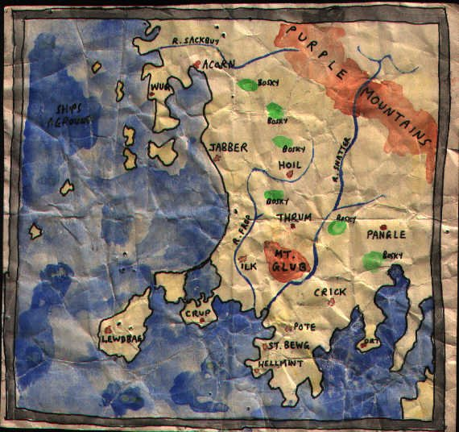

Sunday, December the 14th, 2003
back to: title, date or indexes
Hooting Yard Blog, day one, and one's thoughts turn, of course, to ornithology. How better to spend one's time than to read an extract from The Private Memoirs & Confessions of an Ignorant Ornithologist?
Tuesday. Saw something sitting in a tree. It had a head, two legs, and seemed to be covered in feathers. I only saw the back of the head, so could not tell if it had a beak. I suspect it may have been a linnet.
Wednesday. Trained my powerful binoculars on a speck up in the sky in the far distance. It was moving quite fast. Perhaps a wren?
Thursday. Saw a worm being dragged from the soil by something much bigger than it, possibly with wings. Rang Dennis to tell him about it. He said he'd come and check, but by the time he arrived, puffed out, ten minutes later, the thing was gone, and there was no sign of the worm. Dennis said it was probably a cassowary.
Friday. Overheard a couple of people in the park talking about sedge warblers. Later, I discovered these are a life-form which all authorities agree is a type of bird. Ticked off a box in my notepad.
Saturday. Went to the church fair. When I said how nice all the flags and bunting looked, Dennis said, “That's also the name of a bird!” “Flags and bunting?” I asked. “No, you nitwit,” he said, “Just bunting. Also known as the ortolan.” I was very, very impressed with the breadth of his knowledge.
Sunday. Woke to find an owl sitting on my head.
Marvellous stuff. And here's a crumpled map, followed by a resurrectionist plea.

Hooting Yard on the Air, January the 12th, 2005 : “On Curlews” (starts around 15:02)
Hooting Yard on the Air, April the 15th, 2010 : “The Private Memoirs & Confessions of an Ignorant Ornithologist” (starts around 00:13)